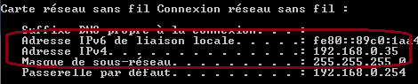

Communication
Les paramètres suivants définissent la configuration réseau pour la communication avec le serveur Avatar et le client micro
Paramètre |
Type |
Valeur par défaut |
Description |
client |
String |
"Salon" |
Le nom du client sur le réseau. Chaque client Windows Avatar doit avoir un nom unique. Un bon principe est de nommer les clients par les pièces qu'ils représentent. |
http -> server -> ip |
String |
"localhost" |
L'adresse IP du serveur Avatar. Au lancement du client, la recherche sur le réseau du serveur Avatar est automatique. Vous n'avez donc pas besoin de modifier ce paramètre. Lorsque le client trouve un Serveur sur le réseau, il s'y connecte automatiquement et au besoin, modifie ce paramètre si celui-ci n'est pas correct, comme par exemple, si votre serveur DHCP a modifié les adresses des ordinateurs ou à l'installation lors d'une première utilisation. |
http -> server -> port |
Integer |
3000 |
Le port de communication HTTP avec le serveur Avatar. Normalement, identique au port défini dans le fichier de propriété du Serveur. |
http -> local -> ip |
String |
"localhost" |
Non modifiable. L'adresse réseau du client nodejs. |
http -> local -> port |
Integer |
8080 |
Non modifiable. Le port de communication du client nodejs. |
http -> remote -> ip |
String |
"localhost" |
Adresse réseau du client micro/speaker C#. Toujours "localhost". Ne modifiez pas ce paramètre. |
http -> remote -> port |
Integer |
8088 |
Le port de communication réseau avec le client micro/speaker C#. Toujours "8088". Ne modifiez pas ce paramètre. |
udp -> port |
Integer |
2222 |
Port de communication UDP avec le serveur Avatar. Normalement, identique au port défini dans le fichier de propriété du Serveur. |
String |
"192.168.0.1-50" |
La recherche du serveur Avatar est automatique et est réalisée en UDP sur un scan des adresses definies ici. Vous pouvez donc laisser le mode d'attribution automatique en DHCP de votre réseau. le client trouvera tout seul le serveur et conservera son adresse même si celle-ci change. Soit, par défaut, les adresses de 1 à 50 sur le masque 192.168.0 Suivant votre configuration réseau, modifiez le masque réseau pour la recherche automatique en laissant 1-50 à la fin. Pour connaitre votre masque de réseau:

|
|
udp -> restart |
Integer |
15 |
Si le client Avatar ne trouve aucun serveur sur le réseau, le scan est redémarré après X secondes, par défaut 15 secondes. Vous pouvez changer cette valeur pour réduire au augmenter le temps entre chaque scan. |
Créé avec HelpNDoc Personal Edition: Générer des livres électroniques EPub facilement